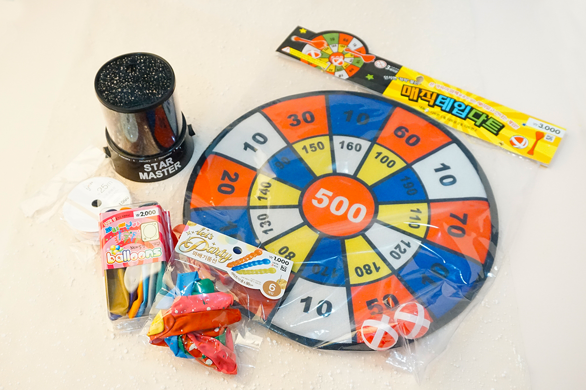
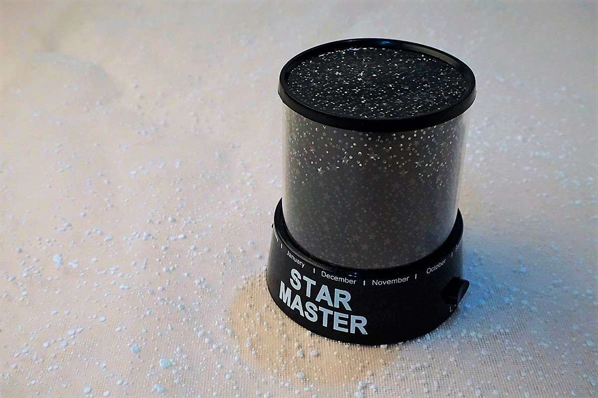
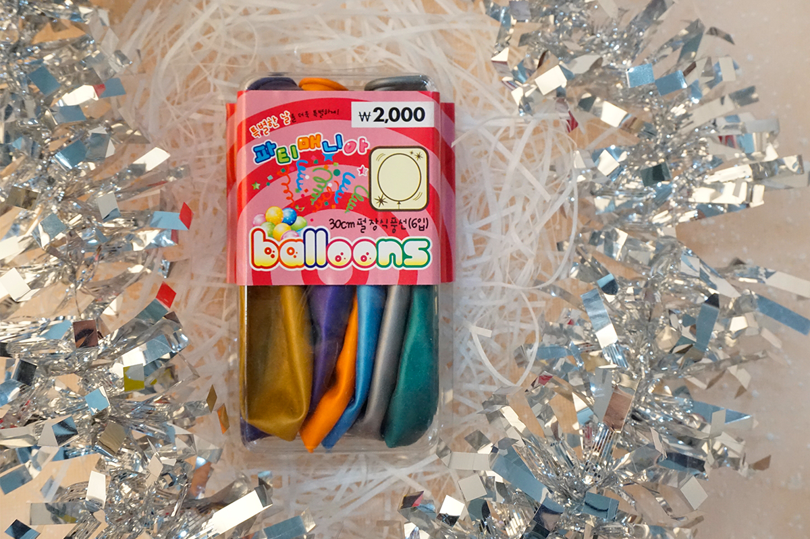
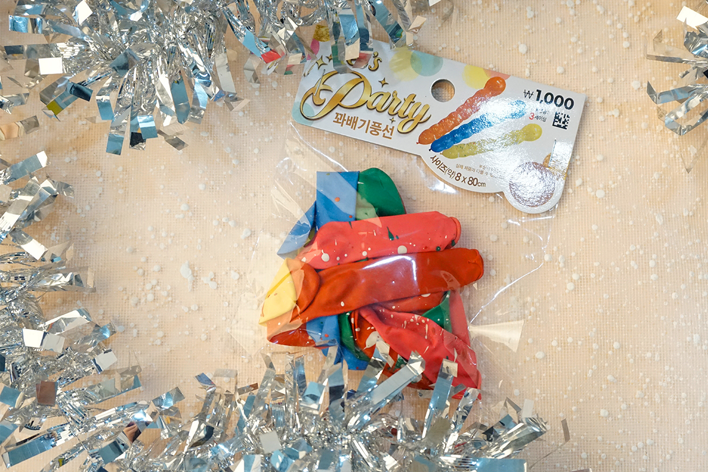
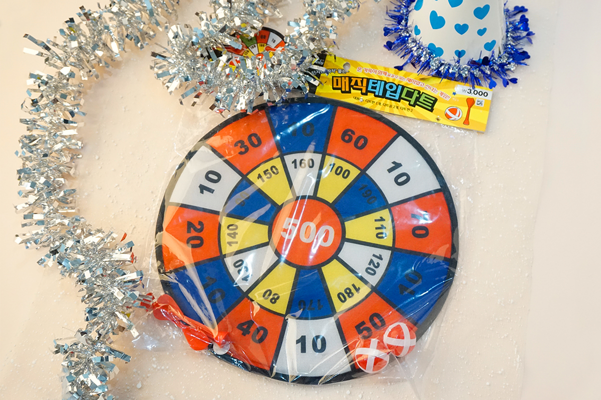
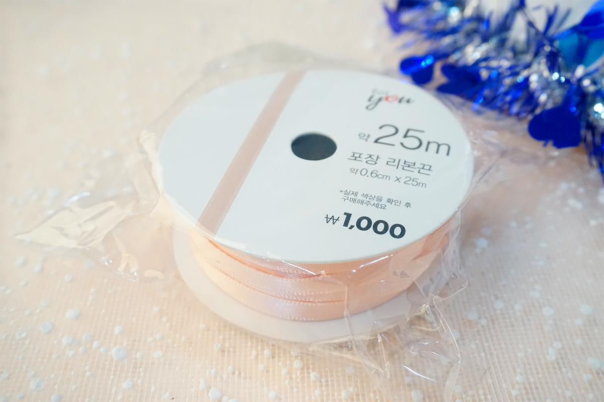

NOW
PARTY
아이템 구성
- 별조명 1개 / 3,000원
- 30cm 풍선 6개 / 2,000원
- 꽈배기 풍선 6개 / 1,000원
- 다트게임 1세트 / 3,000원
- 리본끈 1개 / 1,000원
별조명 1개 / 3,000원
★★★★☆

조금 부실한 것 같으나 바닥에 두는 것이기 때문에 큰 문제는 없어보인다.
조명이 매우 예뻐서 파티 분위기를 내는 데에 가장 큰 역할을 했다.
30cm 풍선 6개 / 2,000원
★☆☆☆☆
6개 든 것이 아쉽다. 색깔도 그닥 이쁘진 않음. 그냥 파티 분위기 내는 용...
부는 건 일반 풍선과 비슷했지만 묶는 게 힘들다.
꽈배기 풍선 6개 / 1,000원
★★★★☆
생각보다 커서 놀란 풍선. 무려 80cm. 부피가 커서 가성비가 가장 좋았다.
하지만 부는 게 힘들다. 볼에 알배길 거 같다.
다트게임 1세트 / 3,000원
★★★★☆
다트의 개수가 적은 것이 아쉽지만 가성비 높게 다양한 사람이 즐길 수 있는 아이템이라 생각한다.
점수판이 있어 내기를 걸기에도 좋을 것 같다.
리본끈 1개 / 1,000원
★★★☆☆
색깔도 이쁘고 문방구에서 샀을 때보다 가격도 훨씬 저렴.
하지만 파티에 쓰기에는 별로 필요하지 않은 것 같다. 가랜드를 만든다면 활용도가 높아질 듯.
총 후기

아무래도 구성품이 적어서 많은 인원이 파티하기에는 충분하지 않다.
애초에 내가 사는 기숙사를 위한 기획이여서 소수가 놀기에는 충분한 듯.
생각보다 사진에서 풍성해보이지 않아서 아쉽다.
풍선을 좀 더 화려한 것을 사거나 구성품을 변경하든지 하면 보완이 될 듯.